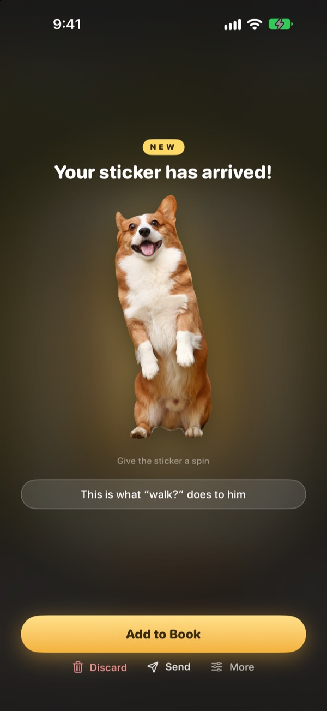
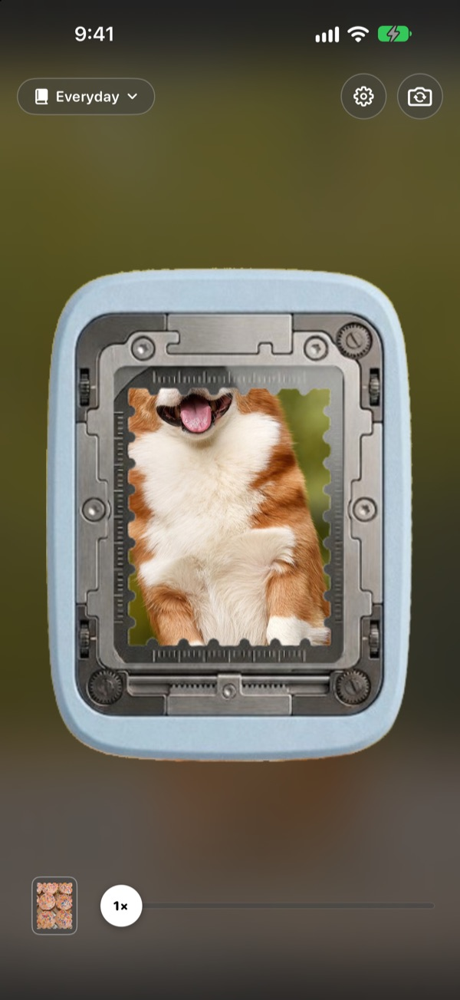
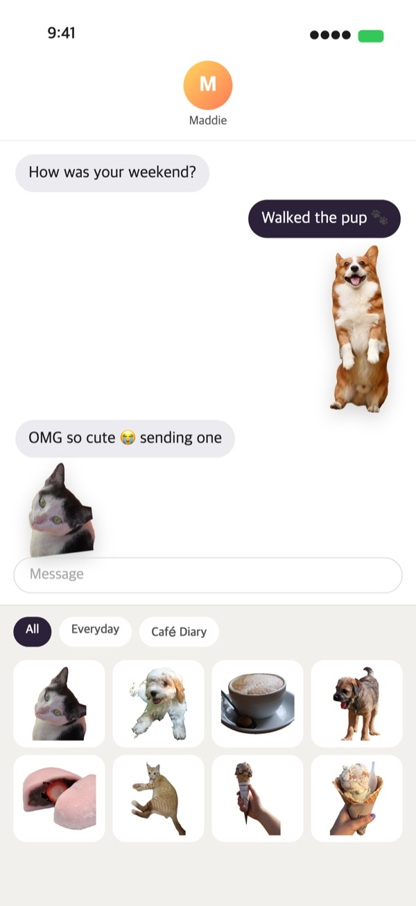
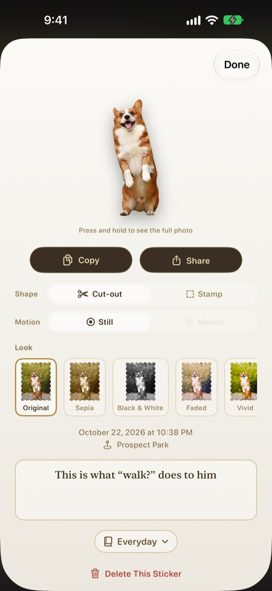
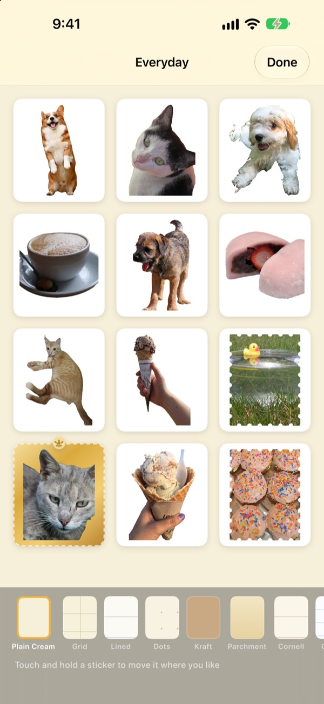

Press and hold.
That moment is a sticker.
Line up the scene in the punch window, press and let go. Your dog comes out cut to the shape of your dog, with a second of motion from just before and after the press. Send it straight from Messages or the keyboard.
Every feature is free. Your stickers and photos stay on your device.

Punch one out
Pick a scene, then press and hold the punch button and let go. Once it's out, try a different shape and look.
The best moments fall asleep in your camera roll
You catch your dog mid-blep. To send it as a sticker you have to find the photo, cut it out, then open some sticker app. By then the chat has moved on. Punching tears off the sticker right where you took it, and it's in your Messages sticker drawer the moment you keep it.
Subjects get cut out, scenery becomes a stamp
If there's something to cut out, like a person, a pet or an object, you get just that. If there isn't, like a landscape, it tears off as a stamp with perforated edges.
A second of motion from around the press comes with it, so the sticker moves.

Straight to Messages and the keyboard
Stickers you punch show up in the sticker drawer in Messages. Turn on the Punching keyboard and you can pick and paste them in other apps too.
Moving stickers arrive moving. Touch and hold one to copy it, then paste it anywhere.

Change the shape and look any time
Switch between cut-out and stamp, motion and still, whenever you like. The original photo is kept, so it stays as sharp as the first time no matter how often you change it.
Pick a look from Original, Sepia, Black & White, Faded, Vivid and Cyan, and add a note, the date and the place.

Collect them in books, print them on paper
Make a book for each theme and you can browse them book by book in Messages and the keyboard too. Choose a page like kraft, grid, lined or parchment, and arrange the stickers in any order.
Turn a book into a printable PDF with stamp-shaped cut lines and print it straight onto sticker paper.

Three steps to start
- 1
Line it up
Put what you want in the window in the middle of the camera.
- 2
Press and let go
The sticker tears off the moment you let go.
- 3
Keep it and send it
Add it to a book and it's ready in Messages and the keyboard.
Where to use it, where to change it
- Messages
- ＋ next to the text field ▸ Stickers ▸ Punching Stickers
- Other apps
- Turn on the Punching keyboard, switch to it with the globe key, then pick and paste
- Anywhere
- Touch and hold a sticker to copy it, then paste
- Paper stickers
- ⋯ in a book ▸ Use ▸ Printable Sticker Sheet (PDF)
- Pages and order
- ⋯ in a book ▸ Decorate Freely
- Older photos
- Import from Photos in a book
- First shape
- Settings ▸ Punch Out ▸ Default Shape
- Seeing motion
- Settings ▸ View ▸ Autoplay Motion
- Quick launch
- Open Punching Camera in Shortcuts or Control Center
Settings is the gear button at the top right of the camera.
Questions
My sticker doesn't move.
At the top right of the camera, go to Settings ▸ View and check that Autoplay Motion is on. Then tap the sticker and check that Motion is on under Shape. Motion is always captured, so you can turn it on any time. Photos imported from the Photos app are a single frame, so they don't move.
I got a stamp instead of a cut-out.
Scenes with nothing to cut out, like a landscape, are torn off as a stamp automatically. Tap the sticker to change it under Shape any time. To start with stamps from the beginning, change Settings ▸ Punch Out ▸ Default Shape.
I can't see my stickers in Messages.
In Messages, tap the ＋ button next to the text field ▸ Stickers and look for Punching Stickers. It appears once you've punched at least one sticker, and if you have more than one book you can browse them book by book. Settings ▸ Use ▸ Use in Messages and Keyboard has step-by-step instructions.
How do I turn on the keyboard?
In Settings ▸ Use ▸ Use in Messages and Keyboard, tap Open Settings, then turn on Keyboards ▸ Punching Stickers. Pasting stickers needs Allow Full Access, but the keyboard never reads or sends what you type and never connects to the internet. Then, in any app, tap the globe key to switch to Punching Stickers.
Can I print real stickers?
Tap ⋯ at the top right of a book ▸ Use ▸ Printable Sticker Sheet (PDF). You get a 300dpi printable PDF of the whole book with stamp-shaped cut lines, ready for sticker paper on a home printer or at a print shop. The Printing Guide in the same menu walks you through it.
Where did my old collections go?
Since 1.0.1, stickers are grouped in one way only: books. Each collection became a book with the same name, and its stickers, pages and order came along as they were.
There's a green light in the status bar.
That's the iOS camera indicator. It's on only while the camera screen is showing. When you open a book, the camera stops and the light goes off.
What happens when I delete a sticker?
The sticker, its original photo and its motion data are permanently deleted from your device, and it disappears from the Messages sticker drawer too. It can't be recovered, so be careful.
Where are my photos and stickers stored?
Only on your device. There's no account, no server of our own and no ads. The only things that leave your device are anonymous usage stats, crash reports and feedback you choose to send. The Privacy Policy has the details.
Is it really free?
Yes, every feature is free. If you like it you can leave the developer a tip in the app, but tips don't unlock anything.
Questions or feedback? Write to leeo@kakao.com. We usually reply within 2 to 3 days. You can also report bugs and suggest features in GitHub issues at M1zz/StampCamera.